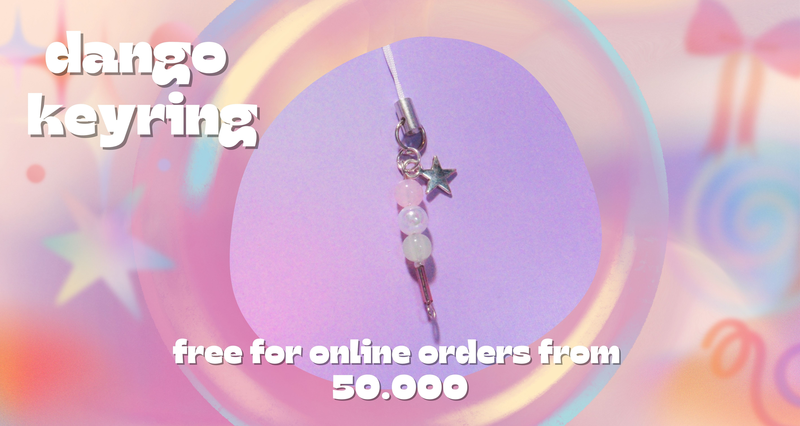

<div class="center slick-initialized slick-slider slick-dotted" id="carousel-slick-container">
    <button type="button"class="slick-prev slick-arrow" style=""></button>
    <div class="slick-list draggable" style="padding: 0px 13vw; height: 306.719px;">
        <div class="slick-track" style="opacity: 1; width: 5750px; transform: translate3d(-1150px, 0px, 0px);">
            <div class="slick-slide slick-cloned" tabindex="-1" role="tabpanel" id=""
                aria-describedby="slick-slide-control02" style="width: 575px;" data-slick-index="-2" aria-hidden="true">
                </div>
            <div class="slick-slide slick-cloned" tabindex="-1" role="tabpanel" id=""
                aria-describedby="slick-slide-control03" style="width: 575px;" data-slick-index="-1" aria-hidden="true">
                </div>
            <div class="slick-slide slick-current slick-active slick-center" tabindex="0" role="tabpanel"
                id="slick-slide00" aria-describedby="slick-slide-control00" style="width: 575px;" data-slick-index="0"
                aria-hidden="false"></div>
            <div class="slick-slide" tabindex="-1" role="tabpanel" id="slick-slide01"
                aria-describedby="slick-slide-control01" style="width: 575px;" data-slick-index="1" aria-hidden="true">
                </div>
            <div class="slick-slide" tabindex="-1" role="tabpanel" id="slick-slide02"
                aria-describedby="slick-slide-control02" style="width: 575px;" data-slick-index="2" aria-hidden="true">
                </div>
            <div class="slick-slide" tabindex="-1" role="tabpanel" id="slick-slide03"
                aria-describedby="slick-slide-control03" style="width: 575px;" data-slick-index="3" aria-hidden="true">
                </div>
            <div class="slick-slide slick-cloned" tabindex="-1" role="tabpanel" id=""
                aria-describedby="slick-slide-control00" style="width: 575px;" data-slick-index="4" aria-hidden="true">
                </div>
            <div class="slick-slide slick-cloned" tabindex="-1" role="tabpanel" id=""
                aria-describedby="slick-slide-control01" style="width: 575px;" data-slick-index="5" aria-hidden="true">
                </div>
            <div class="slick-slide slick-cloned slick-center" tabindex="-1" role="tabpanel" id=""
                aria-describedby="slick-slide-control02" style="width: 575px;" data-slick-index="6" aria-hidden="true">
                </div>
            <div class="slick-slide slick-cloned" tabindex="-1" role="tabpanel" id=""
                aria-describedby="slick-slide-control03" style="width: 575px;" data-slick-index="7" aria-hidden="true">
                </div>
        </div>
    </div>
    
    <button type="button" class="slick-next slick-arrow" style=""></button>

    
    <ul class="slick-dots" style="" role="tablist">
        <li class="slick-active" role="presentation"><button type="button" role="tab" id="slick-slide-control00"
                aria-controls="slick-slide00" aria-label="1 of 4" tabindex="0" aria-selected="true">1</button></li>
        <li role="presentation" class=""><button type="button" role="tab" id="slick-slide-control01"
                aria-controls="slick-slide01" aria-label="2 of 4" tabindex="-1">2</button></li>
        <li role="presentation" class=""><button type="button" role="tab" id="slick-slide-control02"
                aria-controls="slick-slide02" aria-label="3 of 4" tabindex="-1">3</button></li>
        <li class="" role="presentation"><button type="button" role="tab" id="slick-slide-control03"
                aria-controls="slick-slide03" aria-label="4 of 4" tabindex="-1">4</button></li>
    </ul>
</div>